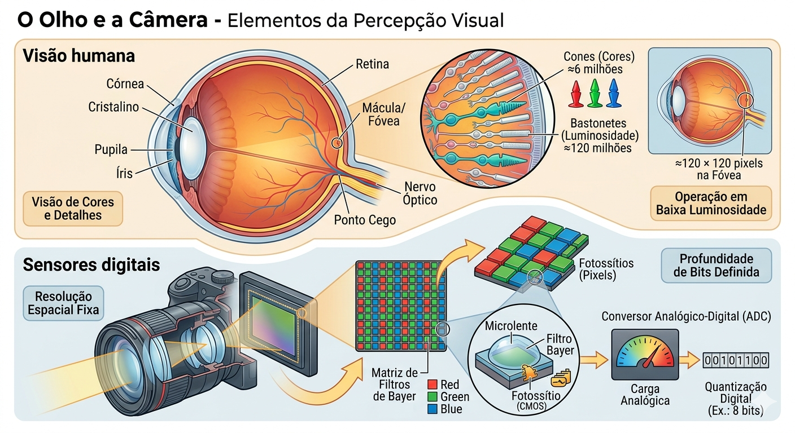
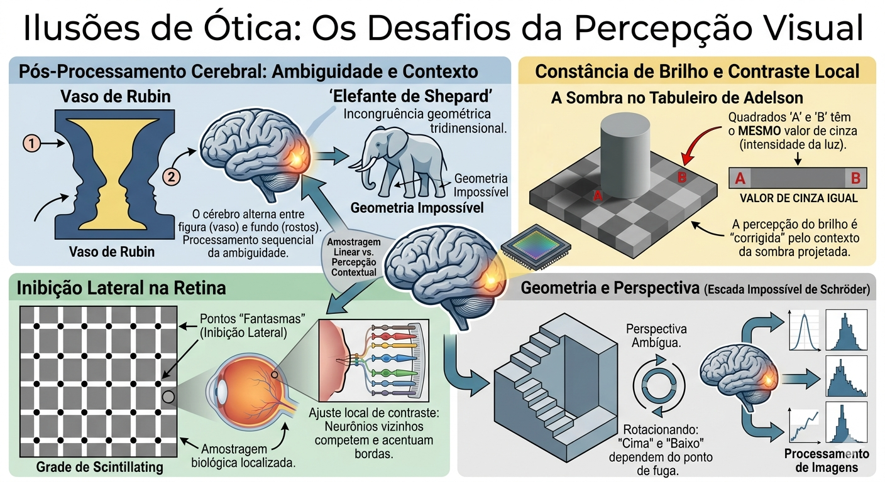
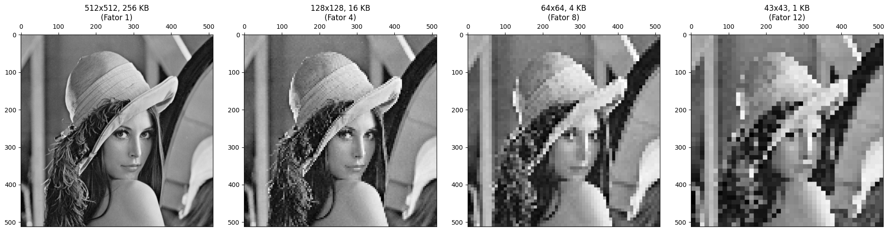
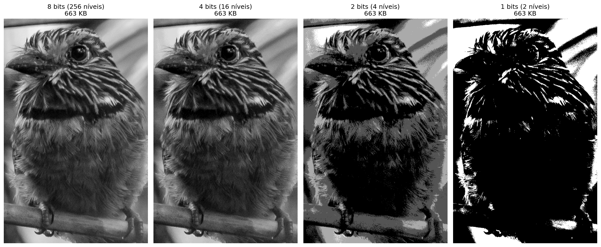
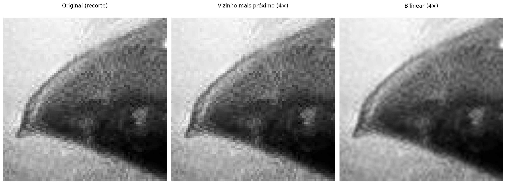
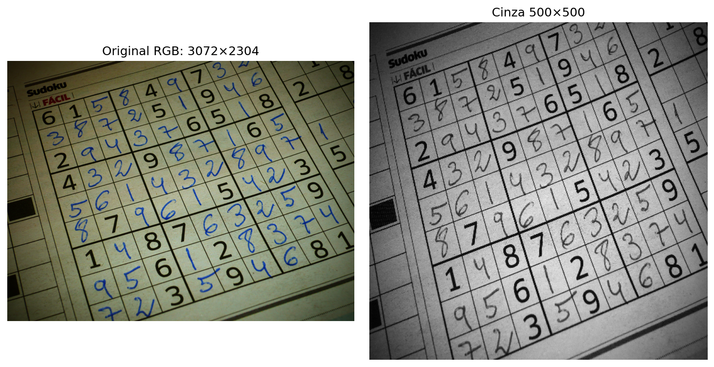
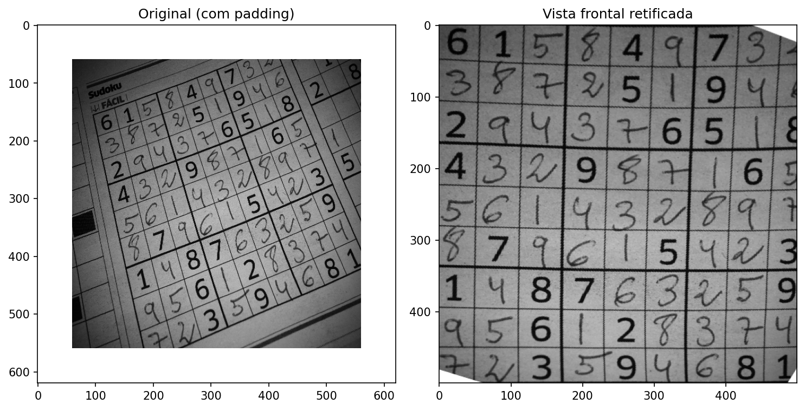

2Da Captura ao Pixel - Amostragem, Quantização e Conectividade
Este capítulo aprofunda a compreensão da imagem digital, transitando da natureza física da captura para a sua representação matemática discreta. Investigamos como a luz se torna dado e como a organização espacial dos pixels define as relações de vizinhança e conectividade essenciais para algoritmos avançados de Visão Computacional (VC).
2.1 Objetivos
Ao final deste capítulo, você será capaz de:
Explicar o modelo físico de formação da imagem baseado em iluminação e refletância.
Diferenciar os mecanismos da visão humana e dos sensores digitais.
Compreender os processos de amostragem (discretização do espaço) e quantização (discretização da intensidade).
Descrever as relações topológicas entre pixels: vizinhança, adjacência, conectividade e distâncias.
Realizar transformações geométricas básicas (translação, rotação, escala) preservando a qualidade.
Visualizar na prática os efeitos da variação da resolução espacial e da profundidade de bits.
2.2 O Olho e a Câmera - Elementos da Percepção Visual
A formação de uma imagem digital começa com a captura da luz refletida pelos objetos. Como ilustrado na Figura 2.1, tanto o olho humano quanto as câmeras digitais seguem princípios ópticos semelhantes para focar a luz em uma superfície sensível, embora utilizem mecanismos biológicos e eletrônicos distintos para a transdução do sinal.
2.2.1 Visão humana
O olho funciona como um sistema óptico complexo: a luz atravessa a córnea, o humor aquoso, a pupila (controlada pela íris) e o cristalino — que ajusta o foco dinamicamente — até atingir a retina. Na retina, encontram-se os fotorreceptores: os cones (≈6 milhões), concentrados na fóvea, são responsáveis pela visão de cores e detalhes, enquanto os bastonetes (≈120 milhões) garantem a visão em baixa luminosidade (visão escotópica), detectando apenas intensidades de cinza. O ponto cego é a região de onde parte o nervo óptico, carecendo de receptores.
2.2.2 Sensores digitais
Nas câmeras, os sensores de imagem desempenham o papel da retina. Os dois tipos mais comuns são o CCD (Charge-Coupled Device - Dispositivo de Carga Acoplada) e o CMOS (Complementary Metal-Oxide-Semiconductor - Semicondutor de Óxido Metálico Complementar). O sensor é composto por uma matriz de fotossítios (pixels) que acumulam carga elétrica proporcional à luz incidente.
Para a reconstrução de cores, utiliza-se o Filtro de Bayer, uma matriz de filtros coloridos que permite que cada pixel capture apenas uma componente de cor: vermelho, verde ou azul (RGGB - Red, Green, Green, Blue). Posteriormente, um ADC (Analog-to-Digital Converter - Conversor Analógico-Digital) quantiza essa carga em valores numéricos, definidos por uma profundidade de bits (ex.: 8 bits, resultando em 256 níveis de intensidade).
NotaCuriosidade
Embora o olho humano tenha milhões de receptores, a resolução de alta definição é restrita à fóvea (visão central), equivalente a aproximadamente \(120 \times 120\) pixels. A percepção de uma cena completa em alta resolução é resultado de intenso pós-processamento realizado pelo cérebro.

Figura 2.1: Comparativo didático entre o sistema visual biológico e o eletrônico: no topo, a anatomia do olho humano destacando a retina e os fotorreceptores (cones e bastonetes); abaixo, a estrutura de uma câmera digital detalhando o sensor CMOS, a matriz de filtros de Bayer (RGGB) e o processo de quantização digital realizado pelo ADC.
2.3 Ilusões de Ótica: Os Desafios da Percepção Visual
Enquanto os sensores digitais capturam a intensidade da luz de forma linear e objetiva, o sistema visual humano interpreta a cena com base em contexto, experiências prévias e mecanismos biológicos de sobrevivência. As ilusões de ótica não são “erros” do olho, mas evidências do intenso pós-processamento cerebral realizado no córtex visual.
2.3.1 Ambiguidade e Contexto
O cérebro busca constantemente dar sentido a padrões ambíguos. No exemplo do Vaso de Rubin (veja a Figura 2.2), a percepção alterna entre a figura (vaso) e o fundo (dois rostos), demonstrando que não conseguimos processar ambas as interpretações simultaneamente. Já a ilusão do Elefante de Shepard brinca com a nossa incapacidade de reconciliar linhas de contorno que sugerem volume em posições logicamente impossíveis.
2.3.2 Brilho e Contraste Local
Muitas ilusões decorrem da inibição lateral, mecanismo pelo qual neurônios vizinhos na retina competem entre si para realçar bordas. Na Grade de Scintillating, pontos escuros “fantasmas” parecem surgir nas interseções brancas devido a esse processamento local de contraste.
A ilusão da Sombra no Tabuleiro de Adelson é talvez a mais impactante para a VC: o quadrado “A” e o quadrado “B” possuem exatamente o mesmo valor de cinza no sensor (ou arquivo digital), mas o cérebro “corrige” o brilho de “B” por entender que ele está sob uma sombra projetada, percebendo-o como mais claro.
2.3.3 Geometria e Perspectiva
A percepção de profundidade pode ser enganada por construções geométricas que desafiam a lógica tridimensional a partir de um ângulo de visão específico. A Escada de Schröder utiliza a ambiguidade da perspectiva para criar um objeto que parece subir ou descer dependendo de como é observado, evidenciando como a nossa interpretação de “cima” e “baixo” depende do ponto de fuga.

Figura 2.2: Coletânea de desafios perceptivos: (topo esquerdo) Vaso de Rubin — ambiguidade figura-fundo; (topo central) Elefante de Shepard — incongruência geométrica; (topo direita) Sombra de Adelson — constância de brilho baseada no contexto; (inferior esquerdo) Grade de pontos — inibição lateral; (inferior direito) Escada de Schröder.
2.4 O Modelo Matemático da Formação da Imagem
Uma imagem pode ser modelada como o produto de duas funções:
\[
f(x,y) = i(x,y) \cdot r(x,y)
\tag{2.1}\]
onde:
\(i(x,y)\) é a iluminação incidente sobre a cena (energia luminosa por unidade de área), determinada pela fonte de luz;
\(r(x,y)\) é a refletância do objeto (fração da luz refletida), determinada pelas propriedades ópticas da superfície, com \(0 < r(x,y) < 1\).
Na prática, as duas componentes variam em escalas espaciais distintas: \(i(x,y)\) tende a variar lentamente no espaço, enquanto \(r(x,y)\) pode apresentar variações abruptas associadas a texturas, bordas e detalhes finos. Técnicas de PDI frequentemente procuram separar ou compensar essas componentes, como em métodos de correção de iluminação não uniforme.
A Figura 2.3 ilustra como esse modelo se manifesta em imagens digitais coloridas, representadas por múltiplos canais espectrais (RGB) e, opcionalmente, por um canal adicional de transparência (RGBA).
2.4.1 Representação Digital e Canais Espectrais
Em imagens digitais coloridas, a função \(f(x,y)\) da Equação 2.1 é representada por múltiplos canais espectrais. No padrão RGB, cada pixel armazena três amostras independentes:
onde \(A(x,y)\) representa o canal alfa (Alpha), responsável por codificar a opacidade do pixel. Por convenção, o valor \(A = 0\) indica um pixel totalmente transparente, enquanto \(A = 255\) (ou \(1\)) representa um pixel totalmente opaco.
Assim, uma imagem digital colorida é estruturada como uma matriz multidimensional de dimensões:
RGB:\(M \times N \times 3\)
RGBA:\(M \times N \times 4\)
em que cada posição \((x,y)\) armazena as amostras associadas às propriedades ópticas daquela coordenada espacial.
Convenção de escala entre bibliotecas: Diferentes ecossistemas de programação adotam faixas de valores e ordenações distintas para representar os canais digitais, conforme sintetizado na Tabela 2.1.
Tabela 2.1: Convenções de escala e ordem de canais nas principais bibliotecas de PDI.
Biblioteca
Tipo padrão
Faixa de valores
Ordem das bandas
Forma do array/tensor
OpenCV
uint8
\([0, 255]\)
BGR
\(H \times W \times C\)
Pillow
uint8
\([0, 255]\)
RGB
\(H \times W \times C\)
NumPy
uint8/float32
\([0,255]\) ou \([0,1]\)
—
\(H \times W \times C\)
scikit-image
float64
\([0{,}0,\;1{,}0]\)
RGB
\(H \times W \times C\)
PyTorch
float32
\([0{,}0,\;1{,}0]\)
RGB
\(C \times H \times W\)
TensorFlow/Keras
float32
\([0{,}0,\;1{,}0]\)
RGB
\(H \times W \times C\)
A conversão entre essas faixas de intensidade é direta e dada por:
\[f_{\text{norm}}(x,y) = \frac{f(x,y)}{255}\]
onde \(f(x,y) \in [0,\,255]\) e \(f_{\text{norm}}(x,y) \in [0,\,1]\).
Negligenciar essas discrepâncias é uma fonte frequente de erros em fluxos de trabalho de VC — como, por exemplo, injetar uma imagem lida via OpenCV (padrão BGR, tipo uint8) diretamente em um modelo profundo do PyTorch que pressupõe o formato RGB normalizado.
2.4.2 Preparando o Ambiente Prático
O bloco a seguir carrega o módulo morph.py do repositório e demonstra, para um pixel sintético, as diferentes convenções de escala e ordem de canais adotadas pelas principais bibliotecas de PDI.
import os, importlib, urllib.requestimport numpy as npimport matplotlib.pyplot as pltBASE_URL ="https://raw.githubusercontent.com/fzampirolli/pdi-vc/master/morph"for f in ["morph.py"]:ifnot os.path.exists(f): urllib.request.urlretrieve(f"{BASE_URL}/{f}", f)import morphimportlib.reload(morph)from morph import mmversion =getattr(morph, "__version__", "local_file")print(f"✅ Ambiente pronto. Módulo 'morph' carregado (versão: {version}).")# Demonstração das convenções de escalaimg_exemplo = np.array([[[200, 100, 50]]], dtype=np.uint8) # 1 pixel RGBprint("\n── Convenções de escala por biblioteca ──")print(f" NumPy / Pillow / OpenCV (uint8): {img_exemplo[0,0]} → faixa [0, 255]")print(f" scikit-image / PyTorch (float): {img_exemplo[0,0] /255.0} → faixa [0.0, 1.0]")print(f" OpenCV: atenção — lê em BGR: {img_exemplo[0,0,::-1]} (canais invertidos)")
2.4.3 Implementação da Leitura de Imagem em morph.py
O trecho a seguir exibe o código-fonte da função mm.read, permitindo verificar diretamente como a biblioteca morph.py implementa a leitura de imagens.
import inspectprint(inspect.getsource(mm.read))
@staticmethod
def read(file, pil=False, grayscale=False):
"""Lê imagem (local, URL ou Google Drive) → PIL.Image, ndarray 2D ou RGB 3D."""
import re, requests, numpy as np
from PIL import Image
from io import BytesIO
from urllib.request import urlopen, Request
# — fonte: URL / Google Drive —
if isinstance(file, str) and file.startswith(("http://", "https://", "id=")):
m = re.search(r"id=([\w-]+)", file) or re.search(r"/d/([\w-]+)", file)
url = f"https://drive.google.com/uc?export=view&id={m.group(1)}" \
if m and ("id=" in file or "drive.google.com" in file) else file
hdr = {"User-Agent": "Mozilla/5.0 AppleWebKit/537.36 Chrome/124 Safari/537.36"}
try:
r = requests.get(url, headers=hdr, timeout=20)
if r.status_code == 429: raise requests.exceptions.HTTPError()
r.raise_for_status()
file = BytesIO(r.content)
except:
file = BytesIO(urlopen(Request(url, headers=hdr), timeout=20).read())
img = Image.open(file)
img.load()
if pil: return img
if grayscale: return np.array(img.convert("L")) # (H,W)
if img.mode == "L": return np.array(img) # (H,W)
if img.mode == "RGBA": # fundo branco
bg = Image.new("RGB", img.size, (255, 255, 255))
bg.paste(img, mask=img.split()[3])
return np.array(bg)
return np.array(img.convert("RGB")) # (H,W,3)
2.4.4 RGB e RGBA: Exemplo Prático com a Imagem Mandrill
O exemplo a seguir carrega a imagem Mandrill em formato RGB, constrói artificialmente um canal alfa com gradiente horizontal e exibe ambas as representações, ilustrando concretamente as estruturas matriciais \(M \times N \times 3\) e \(M \times N \times 4\).
Figura 2.3: Imagem RGB (3 canais, \(M \times N \times 3\)) e versão RGBA (4 canais, \(M \times N \times 4\)) com transparência alfa gradual da esquerda para a direita. Imagem Mandrill — USC SIPI Image Database (domínio público).
2.5 Digitalização: Amostragem e Quantização
Para transformar uma cena contínua em uma imagem digital, dois processos são necessários: amostragem e quantização.
2.5.1 Amostragem - Discretização do espaço
A amostragem consiste em medir o valor da função \(f(x,y)\) em pontos igualmente espaçados, formando uma matriz de \(M\) linhas (altura) e \(N\) colunas (largura). Cada elemento dessa matriz é um pixel. A resolução espacial é dada por \(M \times N\). Quanto maior a resolução, mais detalhes espaciais são preservados, mas maior também o custo computacional e de armazenamento.
2.5.2 Quantização - Discretização da intensidade
A quantização associa a cada pixel um valor numérico discreto, geralmente representado por um inteiro de \(b\) bits. A profundidade de bits define o número de níveis de intensidade: \(2^b\). Imagens em tons de cinza costumam usar 8 bits (256 níveis). Imagens coloridas usam três canais de 8 bits (24 bits no total).
Ilustração: Se usarmos apenas 1 bit por pixel (preto e branco), perdemos todos os tons intermediários. Com 2 bits (4 níveis) já se percebe degradês grosseiros. Com 8 bits, o olho humano dificilmente percebe a discretização (visão contínua).
AvisoErro de quantização
Erro de quantização é a diferença entre o valor analógico real e o valor discreto atribuído. Ele se manifesta como ruído de quantização, visível em regiões com gradiente suave quando se usa poucos bits.
2.5.3 Efeitos da amostragem e quantização
Os experimentos a seguir mostram como a redução da resolução espacial (subamostragem) e da profundidade de bits degradam a qualidade visual. Use o código para explorar diferentes fatores e níveis de cinza.
Imagem original: (3067, 2047, 3)
Tipo da imagem: <class 'numpy.ndarray'>
O experimento apresentado na Figura 2.4 ilustra o compromisso entre a resolução espacial e o custo de armazenamento em memória. O código utiliza a técnica de subamostragem por fatiamento (slicing) para reduzir a matriz original de pixels conforme um fator \(f\), resultando em uma economia de memória — por exemplo, um fator \(f=8\) reduz o tamanho do dado em 64 vezes (\(8^2\)). Para fins de comparação visual, as imagens reduzidas são restauradas às dimensões originais (\(512 \times 512\)) através da interpolação por vizinho mais próximo (nearest). Este processo não recupera a informação perdida, mas torna evidente o efeito de aliasing e a estrutura de blocos (pixelização) gerada pela baixa densidade de dados da matriz amostrada.
def subsample_simple(image, f):# Subamostragem via fatiamento (slicing) reduced = image[::f, ::f]# Cálculo de memória em KB mem_kb = reduced.nbytes /1024 label =f"{reduced.shape[1]}x{reduced.shape[0]}, {int(mem_kb)} KB\n(Fator {f})"# Restaura o tamanho para visualização (H, W originais) res = mm.resize(reduced, (image.shape[1], image.shape[0]), method='nearest')return res, labelfactors = [1, 4, 8, 12]img_gray =img_gray0[820:1850, 890:1550] # Recorte para melhor visualização dos detalhes# Gera os resultados e separa em listas para o mm.showresults = [subsample_simple(img_gray, f) for f in factors]imgs_list = [r[0] for r in results]titles_list = [r[1] for r in results]mm.show(imgs_list, titles=titles_list, cols=4, figsize=(16, 12))

Figura 2.4: Efeito da subamostragem. Os títulos exibem as dimensões (W x H) e o tamanho da matriz em memória (KB).
O experimento na Figura 2.5 foca na quantização de intensidade, o processo de discretização da amplitude da função \(f(x,y)\). Enquanto a subamostragem afeta a grade espacial, a redução da profundidade de bits limita a quantidade de tons de cinza disponíveis para representar o brilho.
Ao reduzir a profundidade de 8 bits (256 níveis) para valores menores, surge o efeito de posterização, onde os gradientes suaves de uma cena são substituídos por transições abruptas. No limite de 1 bit, a imagem torna-se estritamente binária, preservando apenas a silhueta e perdendo detalhes de textura e volume.
def quantize_simple(image, bits):"""Reduz a profundidade de bits e calcula metadados de memória.""" levels =2** bits# Normalização e quantização uniforme quantized = (np.floor(image /256* levels) / levels *255).astype(np.uint8)# Cálculo de memória em KB mem_kb = quantized.nbytes /1024 label =f"{bits} bits ({levels} níveis)\n{int(mem_kb)} KB"return quantized, label# Lista de bits para teste (8 é o padrão, 1 é o binário)bits_test = [8, 4, 2, 1]# Gera os resultados e separa em listas para o mm.showresults_q = [quantize_simple(img_gray, b) for b in bits_test]imgs_q = [r[0] for r in results_q]titles_q = [r[1] for r in results_q]mm.show(imgs_q, titles=titles_q, cols=4, figsize=(16, 12))

Figura 2.5: Efeito da redução da profundidade de bits. Os títulos exibem a quantidade de bits, níveis e o tamanho em memória (KB).
2.5.4 Análise Técnica
Domínio vs. Codomínio: Note que a resolução espacial (dimensões da matriz) permanece constante em 512x512; o que se altera é apenas o codomínio da função da imagem.
Constância de Memória: Observe nos títulos que o tamanho em KB não diminui. Isso ocorre porque o NumPy armazena cada pixel quantizado em um contêiner de 8 bits (uint8), independentemente de o valor real ser apenas 0 ou 1.
Percepção: A degradação visual torna-se crítica abaixo de 4 bits, onde o olho humano começa a perceber as “fronteiras” artificiais criadas pela falta de tons intermediários.
A limitação de tipos de dados menores que um byte no ecossistema Python/NumPy deve-se à arquitetura de hardware, que endereça a memória em blocos de 8 bits (Bytes). Para que se mantenha a compatibilidade com o OpenCV e se garanta a eficiência, mapeiam-se até mesmo elementos binários para contêineres de 1 byte (uint8 ou bool8).
Embora linguagens como ANSI C permitam a compactação de 8 pixels por byte (bit-packing), tal abordagem exige a descompactação constante para cálculos e impõe alta complexidade na manipulação de ponteiros. Conforme a Tabela 2.2, privilegia-se o uso de uint8 pela facilidade no acesso a vizinhos e pela versatilidade em transformações geométricas. Além disso, métodos nativos do NumPy e OpenCV executam o processamento internamente em baixo nível (C/C++), o que torna operações vetorizadas mais rápidas do que implementações manuais com laços aninhados em Python.
Tabela 2.2: Comparativo entre estratégias de compactação e eficiência de processamento.
Característica
Python (NumPy/OpenCV)
ANSI C (Bit-packing)
Menor Unidade
1 Byte (8 bits)
1 Bit
Memória (Binária)
256 KB (para 512x512)
32 KB (para 512x512)
Velocidade
Alta (Vetorização em C)
Variável (Lenta se houver bit-shift)
Complexidade
Baixa: Métodos prontos
Alta: Ponteiros e Máscaras
2.6 Relações entre Pixels - Topologia da Imagem
Os pixels não são elementos isolados; suas posições relativas definem importantes conceitos para processamento.
2.6.1 Vizinhança
Dado um pixel de coordenadas \((x,y)\), definem-se dois tipos principais de vizinhança (para imagens em \(grid\) retangular):
Vizinhança-4 (von Neumann): inclui os pixels nas posições \((x-1,y)\), \((x+1,y)\), \((x,y-1)\), \((x,y+1)\).
Vizinhança-8 (Moore): inclui todos os oito pixels adjacentes (acrescenta os quatro diagonais).
A escolha da vizinhança influencia operações como detecção de bordas, cálculo de gradientes e conectividade.
# # Criação de uma matriz 3x3 para exemplo topológico# viz = np.zeros((3, 3), dtype='uint8')# # Definindo Vizinhança-4 (N4) com valor diferente para destaque# viz[0, 1] = viz[2, 1] = viz[1, 0] = viz[1, 2] = viz[1, 1] = 255# ou simplesmente (teste com números como argumentos):viz = mm.secross()# Exibição da matriz para análise de coordenadasmm.drawImgPlt(viz, scale=40)
Figura 2.6: Ilustração de vizinhanças 4 em uma matriz 3x3. No centro (1,1), o pixel de interesse.
import morphimportlib.reload(morph)from morph import mm
2.6.2 Adjacência, conectividade e caminhos
Dois pixels são adjacentes se estão em contato segundo uma vizinhança definida e satisfazem um critério de valor (ex.: mesmo nível de intensidade). Uma conectividade define uma relação de equivalência entre pixels que formam uma região conexa. Um caminho é uma sequência de pixels adjacentes.
A conectividade-4 (N4) e conectividade-8 (N8) podem produzir resultados diferentes na segmentação e no cálculo de componentes conexas (etiquetagem). Por exemplo, um padrão de tabuleiro de xadrez pode ser completamente desconexo em N4, mas totalmente conexo em N8.
2.6.3 Distâncias entre pixels
As métricas de distância são fundamentais para quantificar a proximidade física e a conectividade entre os elementos que compõem a grade digital. Conforme demonstrado na Tabela 2.3, a escolha da métrica define o custo de deslocamento entre pixels e altera o comportamento de algoritmos de segmentação e análise morfológica.
Para medir a distância entre dois pixels \(p(x_1, y_1)\) e \(q(x_2, y_2)\), utilizam-se diferentes funções métricas que impõem restrições de movimento distintas sobre o grid:
Tabela 2.3: Comparativo de métricas de distância aplicadas à malha de pixels.
Métrica
Definição
Interpretação
Euclidiana
\(\sqrt{(x_1-x_2)^2 + (y_1-y_2)^2}\)
Distância exata em linha reta (contínua)
Manhattan (City block)
\(|x_1-x_2| + |y_1-y_2|\)
Movimentos horizontais + verticais
Chebyshev (Tabuleiro)
\(\max(|x_1-x_2|, |y_1-y_2|)\)
Maior deslocamento entre os eixos
Essas distâncias são aplicadas em diversos contextos de PDI, incluindo algoritmos de interpolação geométrica, transformadas de distância, crescimento de regiões e análise de formas.
NotaExemplo prático
Considerando dois pixels com deslocamentos relativos \(\Delta x = 3\) e \(\Delta y = 4\):
Euclidiana: \(\sqrt{3^2 + 4^2} = 5\) (hipotenusa do triângulo retângulo).
Manhattan: \(3 + 4 = 7\) (soma dos catetos).
Chebyshev: \(\max(3, 4) = 4\) (predomínio do maior deslocamento).
2.7 Armazenamento de Imagens
A escolha do formato de arquivo é um passo decisivo no fluxo de processamento, pois determina como os dados de amostragem e quantização serão preservados ou descartados. Conforme se apresenta na Tabela 2.4, cada extensão equilibra de forma distinta a fidelidade dos dados e a eficiência de armazenamento.
Tabela 2.4: Principais formatos de armazenamento de imagens digitais e suas aplicações em PDI.
Formato
Características
Uso típico
PGM
Formato simples de mapa de cinzas (texto ou binário).
Pesquisa acadêmica e ferramentas Unix.
BMP
Não comprimido (ou compressão simples).
Windows, aplicações legado.
PNG
Compressão sem perdas (lossless).
Web, imagens com transparência.
JPEG
Compressão com perdas (lossy), ideal para fotografias.
Fotos, câmeras digitais.
TIFF
Suporta múltiplas camadas e compressão variada.
Editoração, arquivamento.
RAW
Dados brutos do sensor, sem processamento.
Fotografia profissional.
DICOM
Padrão médico com metadados clínicos embutidos (paciente, equipamento, protocolo).
Radiologia, tomografia, ressonância magnética.
Os metadados de uma imagem incluem parâmetros como largura, altura, profundidade de bits e codificação de cor. Em formatos científicos, preservam-se também informações de calibração e detalhes da captura. Ao utilizar-se a função mm.read(), a biblioteca morph preserva automaticamente esses dados para que se respeitem as propriedades originais da imagem.
Em contextos científicos e hospitalares, privilegia-se o padrão DICOM (Digital Imaging and Communications in Medicine) para garantir que não haja perda de precisão diagnóstica. Repositórios públicos como o The Cancer Imaging Archive (TCIA), o Alzheimer’s Disease Neuroimaging Initiative (ADNI) e o PhysioNet disponibilizam vastos conjuntos de dados neste formato, incluindo metadados clínicos anonimizados que são essenciais para a investigação científica.
2.7.1 Exemplo: Extração de Metadados e Localização GPS
Diferente da matriz de pixels pura obtida pela leitura convencional — como na imagem do pássaro apresentada no início deste capítulo —, o uso do argumento pil=True no método mm.read() altera a natureza do objeto retornado (ver Figura 2.7). Enquanto o padrão (pil=False) retorna um numpy.ndarray RGB, a leitura com pil=True retorna um objeto especializado da biblioteca Pillow, capaz de interpretar o cabeçalho EXIF.
O cabeçalho EXIF (Exchangeable Image File Format) funciona como um repositório técnico da captura, permitindo que o objeto Pillow interprete uma vasta gama de informações que vão muito além das coordenadas de GPS. Ao utilizar pil=True, o sistema ganha acesso ao “DNA” da imagem, incluindo metadados de hardware (marca e modelo da câmera), configurações ópticas (abertura, distância focal e tempo de exposição) e parâmetros de iluminação (uso de flash e balanço de branco).
Essa distinção é importante no PDI, pois transforma a matriz de amostragem em um conjunto de dados contextualizado, onde as características físicas do sensor e da lente podem ser utilizadas para normalizar brilhos ou corrigir distorções geométricas.
from PIL.ExifTags import TAGSimport os, numpy as npbase ="https://upload.wikimedia.org/wikipedia/commons"arquivo = ("Area_de_Prote%C3%A7%C3%A3o_Ambiental_""Quilombos_do_M%C3%A9dio_Ribeira_-_Thomas-""Fuhrmann_%282023-_02%29_Malacoptila_striata.jpg")url =f"{base}/c/c5/{arquivo}"caminho ="imagens/barbudo-rajado.jpg"# 1. Leitura — preserva objeto PIL com EXIFifnot os.path.exists(caminho): os.makedirs("imagens", exist_ok=True) img_obj = mm.read(url, pil=True) mm.write(img_obj, caminho) # salva preservando EXIFelse: img_obj = mm.read(caminho, pil=True)img_numpy = np.array(img_obj) # conversão para NumPy# 2. Extração e conversão de GPS (Tag 34853)exif = img_obj._getexif()if exif and (gps := exif.get(34853)): to_dec =lambda dms, ref: float(-(dms[0]+dms[1]/60+dms[2]/3600) if ref in'SW'else (dms[0]+dms[1]/60+dms[2]/3600)) lat, lon = to_dec(gps[2], gps[1]), to_dec(gps[4], gps[3])print(f"GPS Decimal: {lat:.6f}, {lon:.6f}")print(f"Maps: https://www.google.com/maps/search/?api=1&query={lat},{lon}")# 3. Diagnóstico de tipos, dimensões e acesso a pixelsprint(f"\nTipo PIL : {type(img_obj)} | Dimensões (x,y): {img_obj.size}")print(f"Pillow (0,0): {img_obj.getpixel((0, 0))}")print(f"Tipo NumPy: {type(img_numpy)} | Dimensões [y,x,c]: {img_numpy.shape}")print(f"NumPy [0,0]: {img_numpy[0, 0]}")# 4. Exibiçãomm.show(img_numpy, scale=30)
Figura 2.7: Area de Proteção Ambiental Quilombos do Médio Ribeira - Barbudo-rajado (Malacoptila striata). Crédito: Thomas Fuhrmann (CC BY-SA 4.0).
NotaNota Pedagógica: A sutil diferença das dimensões
Repare que a representação das dimensões muda conforme a estrutura de dados utilizada:
No Pillow (.size): Retorna (Largura, Altura) — no exemplo: (2047, 3067). É uma visão orientada ao arquivo de imagem.
No NumPy (.shape): Segue a convenção matemática de matrizes: (Linhas/Altura, Colunas/Largura, Canais) — no exemplo: (3067, 2047, 3).
Esta distinção é fundamental para evitar erros de indexação ao implementar filtros manuais. Enquanto o objeto Pillow carrega o “onde” e o “quando” (contexto), o array NumPy carrega o “quanto” de luz (intensidade) existe em cada ponto da imagem.
2.7.2 Por que esta separação é importante?
Ao carregar uma imagem via cv2.imread(), o resultado é um <class 'numpy.ndarray'>, que contém estritamente os valores numéricos resultantes da quantização e amostragem. No entanto, ao utilizar pil=True, o mm.read() retorna um objeto da classe PIL.JpegImagePlugin.JpegImageFile.
Esta classe mantém o arquivo “aberto” para permitir o acesso ao contexto da captura antes que os dados sejam convertidos em uma matriz bruta. Note que o pixel (0, 0) é idêntico nas duas representações — (58, 96, 0) no Pillow e [58, 96, 0] no NumPy —, confirmando que ambos descrevem os mesmos dados, apenas com interfaces distintas. Essa separação é vital: pixels servem para algoritmos; metadados servem para georreferenciamento, catalogação científica e correções baseadas no hardware de aquisição.
Para inspecionar todos os metadados EXIF de um objeto Pillow:
from PIL import ExifTagsexif_raw = img_obj._getexif()if exif_raw:for tag_id, valor insorted(exif_raw.items()): tag_nome = ExifTags.TAGS.get(tag_id, f"TAG_{tag_id}")print(f" {tag_nome:40s} : {valor}")
2.8 Transformações Geométricas Básicas
As transformações geométricas alteram a posição dos pixels, mantendo os valores de intensidade. São fundamentais para alinhamento, correção de distorções e aumento de dados (data augmentation) em aprendizado de máquina.
Uma transformação afim é qualquer mapeamento que preserve colinearidade (pontos sobre uma reta permanecem sobre uma reta) e razões de distâncias entre pontos colineares. Em 2D, toda transformação afim pode ser expressa em coordenadas homogêneas por uma matriz \(3 \times 3\):
A sub-matriz \(2 \times 2\) superior esquerda \(\mathbf{A} = \begin{bmatrix} a_{11} & a_{12} \\ a_{21} & a_{22} \end{bmatrix}\) controla rotação, escala e cisalhamento; o vetor \((t_x, t_y)^\top\) controla a translação. As transformações geométricas mais usadas em PDI — translação, rotação e escala — são casos particulares de \(\mathbf{T}\), e podem ser compostas por multiplicação de matrizes, na ordem \(\mathbf{T} = \mathbf{T}_n \cdots \mathbf{T}_2 \mathbf{T}_1\).
NotaTransformação inversa e interpolação
Na implementação prática (cv2.warpAffine), aplica-se a transformação inversa: para cada pixel \((x', y')\) da imagem destino, calcula-se a posição de origem \((x, y) = \mathbf{T}^{-1}(x', y')\) e interpola-se o valor. Isso evita buracos na imagem resultante causados pelo mapeamento direto de pixels inteiros para posições não inteiras.
2.8.1 Translação
A translação é a transformação afim mais simples: desloca todos os pixels por um vetor \((t_x, t_y)\). Em coordenadas homogêneas, é expressa pela matriz:
A terceira linha da matriz garante que a operação permaneça no espaço afim, permitindo que translação, rotação e escala sejam combinadas por simples multiplicação de matrizes. Na prática, cv2.warpAffine usa apenas as duas primeiras linhas (matriz \(2 \times 3\)), pois a terceira é sempre \([0, 0, 1]\).
Pixels deslocados para além da área original são descartados; áreas descobertas são preenchidas com 0 (preto). Ver um exemplo na Figura 2.8.
Figura 2.8: Exemplo de translação da imagem do pássaro com deslocamentos (50,50) e (100,50).
2.8.2 Rotação
A rotação por ângulo \(\theta\) em torno de um ponto central \((c_x, c_y)\) é composta por três transformações afins: translação para a origem, rotação pura e translação de volta. A matriz resultante é:
Na implementação, cv2.getRotationMatrix2D gera diretamente as duas primeiras linhas de \(\mathbf{T}_{\text{rot}}\) (matriz \(2 \times 3\) para warpAffine), aceitando também um fator de escala \(s\) que multiplica \(\cos\theta\) e \(\sin\theta\). Ver exemplo na Figura 2.9.
Como a rotação desloca pixels para novas posições não-inteiras, cv2.warpAffine precisa estimar a cor de cada pixel de destino a partir dos vizinhos — processo chamado interpolação. O parâmetro interp controla esse comportamento:
nearest (INTER_NEAREST): atribui o valor do pixel mais próximo. Rápido, mas produz serrilhado (aliasing) em bordas diagonais.
bilinear (INTER_LINEAR, padrão): média ponderada dos 4 vizinhos mais próximos. Equilibra qualidade e desempenho — adequado para a maioria dos casos.
bicubic (INTER_CUBIC): considera os 16 vizinhos em uma superfície cúbica. Produz bordas mais suaves, ao custo de maior processamento.
Quando \(s > 1\) (ampliação), pixels da imagem destino mapeiam para posições não inteiras na origem — exigindo interpolação para estimar o valor. Quando \(s < 1\) (redução), múltiplos pixels de origem contribuem para um único pixel destino — exigindo decimação. Os mesmos três métodos descritos na rotação estão disponíveis em mm.resize, com a diferença de que aqui o impacto visual é mais perceptível: na ampliação, nearest produz efeito de blocos (pixelation), enquanto bicubic preserva melhor a nitidez das bordas, conforme a Tabela 2.5:
Tabela 2.5: Métodos de interpolação disponíveis em mm.resize e seus respectivos números de vizinhos utilizados no cálculo.
Método
Vizinhos usados
Característica
'nearest'
1
Rápido; produz efeito de blocos (pixelation)
'bilinear'
4
Bom compromisso qualidade/custo; bordas suaves
'bicubic'
16
Maior nitidez; preferido em softwares profissionais
O parâmetro size_or_factor aceita tanto um escalar (fator uniforme, e.g. 0.5 para reduzir à metade) quanto uma tupla (largura, altura) para dimensões absolutas.
# 1. Recorte da região do bicoy, x, offset =210, 40, 40crop = img_gray[y-offset:y+offset, x-offset:x+offset]print(f"Imagem: {img_gray.shape} | Crop: {crop.shape}")# 2. Ampliar 4× com mm.resizecrop_nearest = mm.resize(crop, size_or_factor=4, method='nearest')crop_bilinear = mm.resize(crop, size_or_factor=4, method='bilinear')# 3. Exibição comparativamm.show( [crop, crop_nearest, crop_bilinear], titles=["Original (recorte)", "Vizinho mais próximo (4×)", "Bilinear (4×)"], cols=3, figsize=(16, 12), dpi=200)
Imagem: (1030, 660) | Crop: (80, 80)

Figura 2.10: Comparação de interpolação com zoom no detalhe do olho (recorte 60×60, ampliado 4×). Note o efeito de blocos no vizinho mais próximo vs. a suavização na bilinear.
2.8.4 Cisalhamento (Shear)
O cisalhamento é uma transformação afim que distorce a imagem ao deslocar cada pixel proporcionalmente à sua posição em um eixo. A matriz geral combina cisalhamento horizontal (\(sh_x\)) e vertical (\(sh_y\)):
Para \(sh_x \neq 0\) e \(sh_y = 0\), cada linha é deslocada horizontalmente proporcionalmente à sua posição vertical — produzindo o efeito de “inclinação” característico. Ver exemplo na Figura 2.11.
Transformações geométricas: translação, rotação, escala (com interpolação bilinear ou vizinho mais próximo).
Formatos de arquivo: BMP, PNG, JPEG, TIFF, RAW; cada um com diferentes compromissos entre qualidade e tamanho.
O Capítulo 3 abordará operações espaciais como convolução, filtragem e morfologia matemática (erosão, dilatação).
2.10 🤖 Uso do NotebookLM como Tutor Complementar
Nesta edição, incentivamos o uso do NotebookLM como ferramenta complementar de aprendizagem. Essa ferramenta de IA utiliza exclusivamente os documentos fornecidos pelo autor como base de conhecimento, garantindo respostas coerentes com o conteúdo do livro.
Para cada capítulo, preparamos um projeto específico na plataforma. Para uma experiência de estudo ampliada, utilize o acesso abaixo:
Importante🎓 Estude com o Tutor Inteligente
Para interagir com o conteúdo deste capítulo, acesse o link a seguir. O ambiente contém materiais didáticos em diferentes formatos, gerados a partir do PDF do capítulo. Na plataforma, explore especialmente as opções Guia de Estudo e Conversa para aprofundar sua compreensão.
A IA é uma poderosa aliada nos estudos, mas o conteúdo gerado pode conter erros ou imprecisões. Consulte sempre livros, artigos científicos e outras fontes acadêmicas confiáveis para validar as informações. Sempre que possível, execute os exemplos práticos fornecidos neste capítulo para verificar os resultados.
2.11 Lista de Exercícios
(15%) Explique, com suas próprias palavras, a diferença entre amostragem e quantização. Dê um exemplo concreto de cada uma no contexto de uma imagem digital.
(15%) Considere uma imagem com resolução espacial de 1024 × 768 pixels e profundidade de 24 bits (8 bits por canal RGB). Calcule o tamanho total não comprimido da imagem em bytes e em megabytes.
(20%) Utilizando o código do laboratório, modifique o fator de subamostragem para 3 e para 6. Descreva visualmente o que ocorre com as bordas dos objetos. O que é o efeito de aliasing?
(20%) Para a imagem em tons de cinza, aplique quantização com 3 bits (8 níveis) e 5 bits (32 níveis). Compare os resultados e explique por que 5 bits já pode ser considerado suficiente para muitas aplicações.
(15%) Dados dois pixels \(A=(10,20)\) e \(B=(15,25)\), calcule as distâncias Euclidiana, Manhattan e Chebyshev entre eles.
(15%) Usando a função mm.rotate, gire a imagem do pássaro em ângulos de 90°, 180° e 270° com interpolação bilinear. Compare com a rotação usando method='nearest'. Em quais situações a interpolação vizinho mais próximo ainda é útil?
Referências do Capítulo
A fundamentação teórica deste capítulo baseia-se nas seguintes obras:
Gonzalez; Woods (2018) para os conceitos de amostragem, quantização e relações entre pixels.
Szeliski (2022) para transformações geométricas e conectividade.
Bradski; Kaehler (2008) para a implementação prática com OpenCV e morph.py.
2.12 💻 Parte Prática com Exercícios de Programação
🎯 Objetivo deste Caderno
O caderno permite desenvolver, validar, organizar e testar soluções de Exercícios de Programação (EPs) em ambientes interativos, como o Colab, com os mesmos casos de teste do Moodle, copiando para lá apenas na hora de registrar a nota oficial.
Download
Baixe morph.py e testsuite.py executando a célula abaixo:
Para rodar os testes, execute TestSuite("EP04_01.extensão").run() numa nova célula, trocando a extensão pela da linguagem usada (.py, .java, .c, .cpp, .js ou .r). O sistema baixa os casos de teste do GitHub, executa o programa e calcula a nota automaticamente.
Para testar código Python diretamente, sem salvar arquivo, use run_code(codigo) passando o código como string numa variável codigo:
codigo ="""from morph import mm# ... seu código aqui ..."""TestSuite("EP04_01").run_code(codigo)
2.12.1 EP02_01 ☀️ Ajuste de Brilho e Contraste
Nesta atividade, o objetivo é implementar um operador de ponto para transformação linear de intensidade, aplicando o ajuste dinâmico de brilho e contraste em uma imagem digital.
2.12.1.1 📋 Diretrizes de Implementação
O algoritmo deve seguir o fluxo de execução abaixo:
Dimensões: Ler os inteiros \(L\) (linhas) e \(C\) (colunas) da matriz.
Parâmetros: Ler o valor real \(\alpha\) (fator de contraste) e o inteiro \(\beta\) (fator de brilho).
Dados: Ler os valores inteiros da matriz original.
Mapeamento: Para cada pixel \(p\), calcular o novo valor \(p'\) pela equação:
\[p' = \text{clip}(\text{round}(\alpha \cdot p + \beta))\]
Saída: Exibir a matriz resultante com as dimensões \(L \times C\).
2.12.1.2 📌 Restrições Computacionais
Arredondamento (Round): Aplica-se o arredondamento matemático para o inteiro mais próximo antes da conversão de tipo.
Saturação (Clipping): Os valores devem ser confinados ao intervalo \([0, 255]\) para preservar o padrão de 8 bits:
\[\text{clip}(x) = \max(0, \min(255, x))\]
Simulação: O efeito dos parâmetros \(\alpha\) e \(\beta\) na correção histogramática pode ser observado na Figura 2.12.
2.12.1.3 🧠 Fundamentação Teórica
As alterações modificam o histograma da imagem para ajustar o perfil de iluminação e a distinção tonal.
Parâmetro
Função
Impacto Visual
\(\alpha\) (Alpha)
Escalar
Modula o Contraste. Se \(\alpha > 1\), expande o histograma; se \(0 \le \alpha < 1\), comprime.
\(\beta\) (Beta)
Aditiva
Modula o Brilho. Se positivo, translada o histograma para a direita; se negativo, para a esquerda.
\(\text{clip}\)
Limitador
Restringe a faixa dinâmica, impedindo erros de underflow e overflow.
2.12.1.4 📦 Especificação de Entrada e Saída (VPL)
Entrada:
Linha 1: Inteiro \(L\).
Linha 2: Inteiro \(C\).
Linha 3: Valores de alpha (\(\alpha\)) e beta (\(\beta\)).
Linhas seguintes: Elementos numéricos da matriz original.
Saída:
Matriz transformada estruturada em \(L\) linhas e \(C\) colunas.
2.12.1.5 📌 Exemplos
A tabela a seguir apresenta um exemplo prático do comportamento esperado do algoritmo, destacando a atuação dos operadores de arredondamento e saturação.
Entrada
Saída
Observação
1
4
1.5 -30
0 100 180 255
0 120 240 255
Note o efeito de saturação no último pixel
Executando os Testes
Para rodar os testes, execute TestSuite("EP02_01.extensão").run() numa nova célula, trocando a extensão pela da linguagem usada (.py, .java, .c, .cpp, .js ou .r). O sistema baixa os casos de teste do GitHub, executa o programa e calcula a nota automaticamente.
🎮 Simulador: Brilho e Contraste☀️ p' = αp + β
1.0
0
Entrada Original
Resultado (p')
Fórmula: clip(1.0 * p + 0)
Figura 2.12: Simulador: Ajuste de Brilho e Contraste
%%writefile EP02_01.py# sua solução
Overwriting EP02_01.py
TestSuite("EP02_01.py").run()
✔️ EP02_01.cases já existe em casos/
📋 8 caso(s) carregado(s) de casos/EP02_01.cases
🔍 Testando Python: EP02_01.py
⚠️ EP02_01.py: Arquivo sem conteúdo (menos de 3 linhas). Testes ignorados.
2.12.2 EP02_02 🔬 Subamostragem Espacial
Nesta atividade, você deve implementar a redução da resolução espacial de uma imagem através do processo de subamostragem.
Leia dois inteiros L e C, representando as dimensões da matriz original.
Leia um valor inteiro \(f\) (\(f \ge 1\)), que representa o fator de amostragem.
Leia os valores inteiros da matriz original.
A nova imagem deve ser construída selecionando o pixel da posição \((f \cdot i, f \cdot j)\) da imagem original.
Imprima a matriz resultante com as novas dimensões.
Dimensões Finais: A imagem amostrada terá dimensões \(\lceil L/f \rceil \times \lceil C/f \rceil\). No contexto de programação, isso equivale ao tamanho resultante de um fatiamento (slicing) com passo \(f\).
Implementação: Não utilize funções prontas de bibliotecas de processamento de imagens (como OpenCV ou PIL) para o redimensionamento. Implemente a lógica de seleção de pixels manualmente ou via fatiamento de matrizes.
Aliasing: Note que este processo pode causar o efeito de aliasing (serrilhamento), onde detalhes finos são perdidos ou padrões indesejados aparecem.
2.12.2.1 🧠 Discretização do Espaço
A subamostragem reduz a resolução espacial de uma imagem, selecionando apenas um pixel a cada \(f\) pixels em cada direção. É o processo inverso da interpolação:
Parâmetro
Função
Efeito
Fator \(f\)
Salto de amostragem
Define o intervalo de seleção. Um fator \(2\) reduz a largura e altura pela metade.
Resolução
Densidade de pixels
Diminui a quantidade total de informação espacial da imagem.
Aliasing
Efeito colateral
Surgimento de padrões em escada ou blocos devido à perda de detalhes finos.
2.12.2.2 📋 Tarefa (especificação para VPL)
Entrada:
A primeira linha contém L.
A segunda linha contém C.
A terceira linha contém o fator f.
As linhas seguintes contêm os elementos da matriz \(L \times C\).
Saída:
A matriz reduzida com as dimensões correspondentes ao fatiamento por f.
2.12.2.3 📌 Exemplos
Entrada
Saída
Observação
2
4
2
10 20 30 40
50 60 70 80
10 30
O fator 2 seleciona os pixels (0,0) e (0,2) da primeira linha. A segunda linha é ignorada.
🎮 Simulador: Subamostragem🔽 p' = p(⌊i/f⌋, ⌊j/f⌋)
1
f = 1 → resolução original (4×4) |
f = 2 → metade (2×2) |
f = 3 ou 4 → 1×1
Original (4×4)
Amostrada (tamanho variável)
Fator f = 1 → mantém todos os pixels (4×4)
Figura 2.13: Simulador: Subamostragem
%%writefile EP02_02.py# Código Python
Overwriting EP02_02.py
TestSuite("EP02_02.py").run()
✔️ EP02_02.cases já existe em casos/
📋 5 caso(s) carregado(s) de casos/EP02_02.cases
🔍 Testando Python: EP02_02.py
⚠️ EP02_02.py: Arquivo sem conteúdo (menos de 3 linhas). Testes ignorados.
2.12.3 EP02_03 🎨 Quantização de Níveis de Cinza
Nesta atividade, você deve implementar a quantização uniforme de uma imagem, reduzindo a quantidade de níveis de intensidade de cinza originais para uma nova escala baseada em um número menor de bits.
Leia dois inteiros L e C, representando as dimensões da matriz.
Leia um inteiro \(k\) (\(1 \le k \le 8\)), representando o novo número de bits da imagem.
Calcule o número de níveis (\(N = 2^k\)) e o tamanho do intervalo (passo).
Para cada pixel \(p\), calcule o novo valor \(p'\) mapeando-o para o índice do nível discretizado correspondente (variando de \(0\) a \(2^k-1\)).
Imprima a matriz resultante com os mesmos valores de dimensões originais.
Posterização: Ao reduzir drasticamente os níveis (ex: \(k=2\)), você notará que degradês suaves se transformam em faixas abruptas de cor devido à perda de resolução de amplitude.
Cálculo do Passo: O intervalo entre cada nível é definido por \(passo = 256 / 2^k\).
Mapeamento: O método de quantização uniforme por truncamento que mapeia o pixel para o índice do seu respectivo nível discretizado é dado por:
Em termos de implementação (como em Python), isso equivale à divisão inteira: p' = p // passo.
2.12.3.1 🧠 Discretização da Amplitude
Enquanto a subamostragem lida com a resolução espacial, a quantização foca na precisão da cor (amplitude). Reduzir os bits significa simplificar a informação cromática:
Parâmetro
Função
Efeito
Bits (\(k\))
Profundidade de cor
Define quantos tons diferentes a imagem pode ter (\(2^k\)).
Passo
Intervalo de tom
Espaçamento entre os níveis de cinza permitidos.
Posterização
Fenômeno visual
Transformação de variações contínuas em blocos de cor sólida.
2.12.3.2 📋 Tarefa (especificação para VPL)
Entrada:
A primeira linha contém L.
A segunda linha contém C.
A terceira linha contém o número de bits k.
As linhas seguintes contêm os elementos da matriz \(L \times C\).
Saída:
A matriz transformada com os índices dos níveis quantizados, mantendo o tamanho original \(L \times C\).
2.12.3.3 📌 Exemplos
Entrada
Saída
Observação
1
4
2
0 80 170 255
0 1 2 3
Com \(k=2\), temos \(2^2=4\) níveis discretos disponíveis (\(0,1,2,3\)). O passo é \(256/4=64\). Aplicando a divisão inteira por elemento: \(0 // 64 = 0\), \(80 // 64 = 1\), \(170 // 64 = 2\), \(255 // 64 = 3\).
1
5
1
10 50 120 200 250
0 0 0 1 1
Com \(k=1\), temos \(2^1=2\) níveis (\(0\) e \(1\)). Passo \(=256/2=128\). Pixels menores que \(128\) resultam em \(0\), e pixels maiores ou iguais a \(128\) resultam em \(1\).
🎮 Simulador: Quantização (Profundidade de bits)🎚️ q = round( p × (L‑1) / 255 )
✔️ EP02_03.cases já existe em casos/
📋 5 caso(s) carregado(s) de casos/EP02_03.cases
🔍 Testando Python: EP02_03.py
⚠️ EP02_03.py: Arquivo sem conteúdo (menos de 3 linhas). Testes ignorados.
2.12.4 EP02_04 📐 Transformada de Distância em Imagem Binária
Dada uma imagem binária onde pixels de valor 1 representam o objeto e pixels 0 representam o fundo, a distância de um pixel de fundo recebe a menor distância ao pixel de objeto mais próximo. Pixels de objeto recebem distância 0. Para simplificar, considere que a imagem tem apenas um único objeto com um pixel de valor 1.
Problema: Leia uma imagem binária \(L \times C\) e uma métrica, e calcule essa distância simplificada aplicando uma das três fórmulas:
A distância Chessboard é \(\max(\|dx\|, \|dy\|)\). O único pixel objeto é \((2,2)=0\); os demais armazenam sua distância mínima até ele.
2.12.4.4 📌 Observações finais
Como a imagem tem apenas um objeto de um pixel, a distância de cada pixel de fundo é simplesmente a distância desse pixel ao único ponto objeto.
A implementação pode usar força bruta (percorrer todos os pixels da imagem e calcular a distância diretamente), pois \(L\) e \(C\) são pequenos nos casos de teste.
Este problema é um aquecimento para a Transformada de Distância geral, que será trabalhada em capítulos posteriores com múltiplos objetos e algoritmos otimizados.
🎮 Simulador Interativo — Transformada de Distância Clique
na grade para alternar pixels
Métrica:
Imagem Binária (clique para editar)
Transformada de Distância
Grade 5×5 · Clique em qualquer célula da imagem para adicionar/remover
objeto
Figura 2.15: Simulador: Ajuste de Brilho e Contraste
%%writefile EP02_04.py# Código Python
Overwriting EP02_04.py
TestSuite("EP02_04.py").run()
✔️ EP02_04.cases já existe em casos/
📋 5 caso(s) carregado(s) de casos/EP02_04.cases
🔍 Testando Python: EP02_04.py
⚠️ EP02_04.py: Arquivo sem conteúdo (menos de 3 linhas). Testes ignorados.
2.12.5 EP02_05 ➡️ Translação de Imagem
Nesta atividade, você deve implementar o deslocamento espacial de uma imagem. A translação move cada pixel da imagem original para uma nova posição com base em um vetor de deslocamento.
Leia dois inteiros L e C, representando as dimensões da matriz.
Leia dois inteiros \(t_x\) (deslocamento horizontal) e \(t_y\) (deslocamento vertical).
Leia os valores inteiros da matriz original.
Calcule a nova posição \((x', y')\) para cada pixel \((x, y)\) original.
Imprima a matriz resultante com as mesmas dimensões da original.
Preenchimento: Pixels que “entram” na imagem devido ao deslocamento e não possuem correspondente na original devem ser preenchidos com 0 (preto).
Descarte: Pixels que, após a translação, ficarem fora dos limites da matriz (\(0 \dots L-1\) ou \(0 \dots C-1\)) devem ser ignorados.
Coordenadas: Considere \(x\) como o índice da linha e \(y\) como o índice da coluna.
2.12.5.1 🧠 Deslocamento Espacial
Transladar uma imagem significa mover todos os seus pontos por uma distância fixa em direções especificadas. Matematicamente, usando coordenadas homogêneas, a operação é descrita como:
As linhas seguintes contêm os elementos da matriz \(L \times C\).
Saída:
A matriz resultante com as mesmas dimensões \(L \times C\) após o deslocamento.
2.12.5.3 📌 Exemplos
Entrada
Saída
Observação
2
2
1 1
10 20
30 40
0 0
0 10
Deslocamento (\(t_x=1, t_y=1\)): Cada pixel move uma posição para a direita (horizontal) e uma para baixo (vertical). O pixel \((0,0)=10\) vai para o destino \((1,1)\) (canto inferior direito). As posições vazias são preenchidas com \(0\).
3
3
-1 0
1 2 3
4 5 6
7 8 9
2 3 0
5 6 0
8 9 0
Deslocamento (\(t_x=-1, t_y=0\)): Cada pixel move uma posição para a esquerda (horizontal). A primeira coluna original (1, 4, 7) é descartada, as demais colunas movem-se para a esquerda, e a última coluna resultante é preenchida com zeros (\(0\)).
✔️ EP02_05.cases já existe em casos/
📋 5 caso(s) carregado(s) de casos/EP02_05.cases
🔍 Testando Python: EP02_05.py
⚠️ EP02_05.py: Arquivo sem conteúdo (menos de 3 linhas). Testes ignorados.
2.12.6 EP02_06 🔄 Rotação de Imagem
Nesta atividade, você deve implementar a rotação de uma imagem em torno do seu centro geométrico. Esta operação requer o mapeamento de coordenadas e o uso de técnicas de interpolação para determinar os novos valores dos pixels.
Leia dois inteiros L e C, representando as dimensões da matriz.
Leia um valor real \(\theta\) (ângulo em graus) e uma string representando o método de interpolação (nearest ou bilinear).
Leia os valores inteiros da matriz original.
Realize a rotação em torno do centro da imagem \((L/2, C/2)\).
Imprima a matriz resultante com as mesmas dimensões da original.
Mapeamento Inverso: Para evitar “buracos” na imagem final, percorra cada pixel \((x', y')\) da imagem de destino e calcule sua posição correspondente \((x, y)\) na imagem original usando a matriz de rotação inversa.
Interpolação:
nearest: Atribui o valor do pixel mais próximo da coordenada calculada.
bilinear: Calcula uma média ponderada baseada nos 4 vizinhos mais próximos.
Bordas: Pixels cuja origem \((x, y)\) caia fora dos limites da imagem original devem ser preenchidos com 0.
2.12.6.1 🧠 Transformação por Ângulo
A rotação de um ponto \((x, y)\) em relação à origem por um ângulo \(\theta\) é dada pela matriz de transformação. Para rotacionar em torno de um centro \((x_c, y_c)\), primeiro transladamos o centro para a origem, rotacionamos e transladamos de volta:
Dica: Use o mapeamento inverso para garantir que todos os pixels da imagem de saída sejam preenchidos corretamente.
2.12.6.2 📋 Tarefa (especificação para VPL)
Entrada:
A primeira linha contém L.
A segunda linha contém C.
A terceira linha contém o ângulo theta (em graus) e o método interp (nearest ou bilinear).
As linhas seguintes contêm os elementos da matriz \(L \times C\).
Saída:
A matriz rotacionada com L linhas e C colunas.
2.12.6.3 📌 Exemplos
Entrada
Saída
Observação
2
2
90 nearest
1 2
3 4
3 1
4 2
Rotação de 90° horário: a coluna 0 vira a linha 0 (de baixo para cima). \((0,0)=1→(1,0)\), \((1,0)=3→(0,0)\), \((0,1)=2→(1,1)\), \((1,1)=4→(0,1)\).
3
3
45 bilinear
0 0 0
0 255 0
0 0 0
0 180 0
180 255 180
0 180 0
Rotação de 45°: o pixel central permanece \(255\); os vizinhos diretos recebem valor interpolado \(\approx 180\) por bilinear; os cantos permanecem \(0\).
● Quadrado azul com marcador laranja (canto superior direito) – a rotação é em torno do centro
θ = 0° → cos = 1.000, sin = 0.000 → matriz identidade
Figura 2.17: Simulador: Rotação (ângulo θ)
%%writefile EP02_06.py# Código Python
Overwriting EP02_06.py
TestSuite("EP02_06.py").run()
✔️ EP02_06.cases já existe em casos/
📋 5 caso(s) carregado(s) de casos/EP02_06.cases
🔍 Testando Python: EP02_06.py
⚠️ EP02_06.py: Arquivo sem conteúdo (menos de 3 linhas). Testes ignorados.
2.12.7 EP02_07 🔍 Redimensionamento (Escala)
Nesta atividade, você deve implementar o redimensionamento de uma imagem utilizando fatores de escala. Diferente da subamostragem simples, aqui utilizaremos técnicas de interpolação para permitir tanto a ampliação quanto a redução da imagem.
Leia dois inteiros L e C, representando as dimensões da matriz original.
Leia dois valores reais \(s_x\) (escala nas linhas) e \(s_y\) (escala nas colunas).
Leia uma string representando o método de interpolação (nearest ou bilinear).
Leia os valores inteiros da matriz original.
Calcule as novas dimensões: \(L' = \text{round}(L \times s_x)\) e \(C' = \text{round}(C \times s_y)\).
Imprima a matriz resultante com as novas dimensões.
Mapeamento Inverso: Para cada pixel \((x', y')\) da imagem de destino, encontre a posição correspondente na origem usando \((x, y) = (x'/s_x, y'/s_y)\).
Interpolação:
nearest: Seleciona o valor do pixel mais próximo (arredondamento das coordenadas).
bilinear: Realiza uma interpolação linear dupla entre os quatro pixels vizinhos mais próximos na imagem original.
Bordas: Certifique-se de que o mapeamento não tente acessar índices fora do intervalo \([0, L-1]\) e \([0, C-1]\).
2.12.7.1 🧠 Interpolação para Ampliação/Redução
Redimensionar uma imagem por fatores \((s_x, s_y)\) exige o preenchimento de vazios (na ampliação) ou a fusão de informações (na redução). O método de interpolação define a qualidade visual do resultado:
Método
Funcionamento
Efeito Visual
Nearest
Pega o valor do vizinho mais próximo.
Rápido, mas gera efeito “pixelado” ou blocos.
Bilinear
Média ponderada dos 4 vizinhos (\(2 \times 2\)).
Suaviza a imagem, reduzindo o serrilhamento.
2.12.7.2 📋 Tarefa (especificação para VPL)
Entrada:
A primeira linha contém L.
A segunda linha contém C.
A terceira linha contém os fatores sx e sy.
A quarta linha contém o método interp (nearest ou bilinear).
As linhas seguintes contêm os elementos da matriz \(L \times C\).
Saída:
A matriz redimensionada com dimensões \(L' \times C'\).
2.12.7.3 📌 Exemplos
Entrada
Saída
Observação
2
2
2.0 2.0
nearest
1 2
3 4
1 1 2 2
1 1 2 2
3 3 4 4
3 3 4 4
Ampliação 2×: cada pixel original é replicado em um bloco 2×2. A imagem \(2\times2\) vira \(4\times4\).
2
2
0.5 0.5
nearest
10 20
30 40
10
Redução 0.5×: a imagem \(2\times2\) vira \(1\times1\). Com nearest, o único pixel de saída amostra a posição \((0,0)=10\).
Figura 2.18: Simulador: Redimensionamento (Nearest vs Bilinear)
%%writefile EP02_07.py# Código Pythonimport numpy as npfrom morph import mm# 1. Leitura das dimensões, fatores e métodol =int(input())c =int(input())sx, sy =map(float, input().split())interp =input().strip()# 2. Leitura da imagem originalimg = mm.readImg(l, c)# 3. Novas dimensõesl_new =round(l * sx)c_new =round(c * sy)# 4. Redimensionamento usando mm.resize# cv2.resize usa (largura, altura) = (colunas, linhas)resultado = mm.resize(img, (c_new, l_new), method=interp)# 5. Exibiçãoprint(mm.drawImg(resultado))
Writing EP02_07.py
TestSuite("EP02_07.py").run()
✔️ EP02_07.cases já existe em casos/
📋 5 caso(s) carregado(s) de casos/EP02_07.cases
🔍 Testando Python: EP02_07.py
✔️ Caso1_Ampliacao_2x_Nearest: OK✔️ Caso2_Reducao_05x_Nearest: OK✔️ Caso3_Sem_Escala: OK✔️ Caso4_Ampliacao_Bilinear: OK✔️ Caso5_Escala_Assimetrica: OK
📊 Resultado: 5/5 (100.0%)
🎉 Parabéns! Todos os testes passaram.
2.12.8 EP02_08 🔀 Cisalhamento (Shear)
Nesta atividade, você deve implementar a transformação de cisalhamento em uma imagem. O cisalhamento é uma transformação afim que desloca cada ponto em uma direção fixada, por um valor proporcional à sua distância de uma reta paralela a essa direção, resultando em um efeito de inclinação.
Leia dois inteiros L e C, representando as dimensões da matriz.
Leia dois valores reais \(sh_x\) (cisalhamento horizontal) e \(sh_y\) (cisalhamento vertical).
Leia uma string representando o método de interpolação (nearest ou bilinear).
Leia os valores inteiros da matriz original.
Aplique a transformação mantendo o tamanho original da imagem (cortando o que ultrapassar os limites).
Imprima a matriz resultante com as dimensões \(L \times C\).
Mapeamento Inverso: Para cada pixel \((x', y')\) da imagem de destino, calcule a posição correspondente na origem \((x, y)\) utilizando a matriz de cisalhamento inversa.
Preenchimento: Coordenadas que resultarem em posições fora da matriz original devem ser preenchidas com 0.
Coordenadas: Para fins desta implementação, considere \(x\) como o índice da linha e \(y\) como o índice da coluna.
2.12.8.1 🧠 Distorção Afim
O cisalhamento altera a geometria da imagem inclinando seus eixos. A relação entre as coordenadas originais \((x, y)\) e as transformadas \((x', y')\) é dada por:
A quarta linha contém o método interp (nearest ou bilinear).
As linhas seguintes contêm os elementos da matriz \(L \times C\).
Saída:
A matriz transformada com as mesmas dimensões \(L \times C\).
2.12.8.3 📌 Exemplos
Entrada
Saída
Observação
3
3
0.5 0.0
nearest
10 20 30
40 50 60
70 80 90
10 20 30
0 40 50
0 0 70
Cisalhamento horizontal: linha \(i\) desloca \(\lfloor i \cdot 0.5 \rfloor\) pixels. Linha \(0→0\)px, linha \(1→0\)px, linha \(2→1\)px. Os pixels deslocados para fora são descartados e as posições vazias preenchidas com \(0\).
2
2
0.0 1.0
nearest
10 20
30 40
10 0
30 20
Cisalhamento vertical: coluna \(j\) desloca \(\lfloor j \cdot 1.0 \rfloor\) pixels para baixo. Coluna \(0→0\)px (inalterada), coluna \(1→1\)px: \(20\) desce para \((1,1)\) e \((0,1)\) fica \(0\).
✔️ EP02_08.cases já existe em casos/
📋 5 caso(s) carregado(s) de casos/EP02_08.cases
🔍 Testando Python: EP02_08.py
⚠️ EP02_08.py: Arquivo sem conteúdo (menos de 3 linhas). Testes ignorados.
2.12.9 EP02_09 🧩 Transformação Afim Genérica
Nesta atividade, você deve implementar uma transformação afim arbitrária em uma imagem. Esta operação é a generalização de todas as transformações lineares (escala, rotação, cisalhamento) combinadas com a translação, permitindo manipulações geométricas complexas através de uma única matriz.
Leia dois inteiros L e C, representando as dimensões da matriz.
Leia seis valores reais (\(a, b, t_x, c, d, t_y\)) que compõem a matriz de transformação afim \(2 \times 3\).
Leia uma string representando o método de interpolação (nearest ou bilinear).
Leia os valores inteiros da matriz original.
Aplique a transformação mantendo o tamanho original \(L \times C\).
Mapeamento Inverso: Para calcular o valor de cada pixel na imagem de destino, você deve utilizar a inversa da matriz de transformação afim fornecida para encontrar a coordenada correspondente na imagem original.
Preenchimento: Coordenadas calculadas que caiam fora dos limites \([0, L-1]\) e \([0, C-1]\) da imagem original devem resultar em um pixel de valor 0.
Flexibilidade: Esta implementação deve ser capaz de realizar qualquer uma das tarefas anteriores (translação, rotação, etc.) bastando alterar os parâmetros da matriz.
Dica:
flags = cv2.INTER_NEAREST if interp =='nearest'else\ cv2.INTER_CUBIC if interp =='bicubic'else\ cv2.INTER_LANCZOS4 if interp =='lanczos'else\ cv2.INTER_LINEARr = cv2.warpAffine(img, M, (C, L), flags=flags)
2.12.9.1 🧠 Combinação de Operações
A transformação afim preserva pontos, retas e planos. No processamento de imagens, ela mapeia a posição \((x, y)\) para \((x', y')\) seguindo o sistema:
\[\begin{bmatrix} x' \\ y' \end{bmatrix} = \begin{bmatrix} a & b \\ c & d \end{bmatrix} \begin{bmatrix} x \\ y \end{bmatrix} + \begin{bmatrix} t_x \\ t_y \end{bmatrix}\]
Ou, de forma compacta em coordenadas homogêneas:
\[\begin{bmatrix} x' \\ y' \\ 1 \end{bmatrix} = \begin{bmatrix} a & b & t_x \\ c & d & t_y \\ 0 & 0 & 1 \end{bmatrix} \begin{bmatrix} x \\ y \\ 1 \end{bmatrix}\]
2.12.9.2 📋 Tarefa (especificação para VPL)
Entrada:
A primeira linha contém L.
A segunda linha contém C.
A terceira linha contém seis floats: a b tx c d ty.
A quarta linha contém o método interp (nearest ou bilinear).
As linhas seguintes contêm os elementos da matriz \(L \times C\).
Saída:
A matriz transformada com as dimensões originais \(L \times C\).
2.12.9.3 📌 Exemplos
Entrada
Saída
Observação
2
2
1.0 0.0 0.5 0.0 1.0 0.5
bilinear
10 20
30 40
15 20
25 30
Translação fracionária \((t_x=0.5, t_y=0.5)\): cada pixel de saída \((i,j)\) amostra a posição \((i+0.5,\, j+0.5)\) da entrada via bilinear. Ex: \((0,0)\) interpola os quatro vizinhos \(→15\).
Escala \(2\times\) via matriz afim \((a=2, d=2)\): cada pixel de saída \((i,j)\) amostra a posição \((2i, 2j)\) da entrada com nearest. Ex: \((0,2)→(0,4)\) fora da imagem \(→\) nearest clipa para \((0,2)=3\)… aguarda confirmação da lógica de borda.
🎮 Simulador: Transformação Afim 2D📐 [x'] = [a b tx]·[x y 1]ᵀ
Matriz afim 2×3
abtx
cdty
● Seta laranja (ponta triangular) + corpo retangular preto. A transformação afim é aplicada à figura inteira.
Figura 2.20: Simulador: Transformação Afim (matriz 2×3)
%%writefile EP02_09.py# Código Python
Overwriting EP02_09.py
TestSuite("EP02_09.py").run()
✔️ EP02_09.cases já existe em casos/
📋 5 caso(s) carregado(s) de casos/EP02_09.cases
🔍 Testando Python: EP02_09.py
⚠️ EP02_09.py: Arquivo sem conteúdo (menos de 3 linhas). Testes ignorados.
2.12.10 EP02_10 🎯 Correção de Perspectiva (Homografia)
Nesta atividade, você deve implementar a transformação de perspectiva, também conhecida como homografia. Diferente das transformações afins, a perspectiva não preserva o paralelismo, permitindo “retificar” objetos inclinados, como documentos ou placas capturados em ângulos oblíquos.
Leia dois inteiros L e C, representando as dimensões da matriz original.
Leia quatro pares de coordenadas\((x, y)\) representando os cantos do quadrilátero de origem (objeto distorcido).
Leia quatro pares de coordenadas\((x, y)\) representando os cantos do quadrilátero de destino (onde o objeto deve ser mapeado).
Leia os valores da matriz original.
Calcule a matriz de homografia \(3 \times 3\) e aplique a transformação.
Imprima a matriz resultante com as dimensões de saída especificadas.
Graus de Liberdade: A homografia possui 8 graus de liberdade (o nono elemento da matriz \(3 \times 3\) é uma constante de normalização, geralmente 1), exigindo no mínimo 4 pontos correspondentes para ser calculada.
Projeção: Após multiplicar as coordenadas pela matriz, é necessário dividir os resultados \(x'\) e \(y'\) pela componente homogênea \(w\) para retornar ao plano 2D.
Uso de Bibliotecas: Para esta tarefa, você pode utilizar as funções cv2.getPerspectiveTransform para obter a matriz e cv2.warpPerspective para aplicar a transformação, ou implementar o sistema linear e o mapeamento inverso manualmente para um desafio extra.
# Dimensões de saída: bounding box dos pontos destino + 1w =int(max(pts2[:, 0])) +1; h =int(max(pts2[:, 1])) +1# M = cv2.getPerspectiveTransform(pts1, pts2)# dst = cv2.warpPerspective(img, M, (w, h))# oudst = mm.perspective_transform(img, pts1, pts2, size=(w, h))
2.12.10.1 🧠 Deformação não-afim
Enquanto transformações afins mapeiam paralelogramos em paralelogramos, a homografia mapeia qualquer quadrilátero em outro quadrilátero. Isso é essencial para visão computacional:
As 4 primeiras linhas após as dimensões são os pontos de origem; as 4 seguintes são os destinos. Com pontos idênticos, a transformação de perspectiva é a identidade e a imagem é preservada.
🎮 Simulador: Correção de Perspectiva📐 p' = H·p (homografia 3×3)
✨ Como usar: Arraste os 4 pontos vermelhos (cantos do quadrilátero distorcido).
O interior mostra uma textura quadriculada. Clique em Corrigir perspectiva para transformar o quadrilátero em um retângulo 300×300 (simulação visual).
Arraste os cantos → o quadrilátero se deforma. A correção mapeia os 4 pontos para um retângulo 300×300 usando homografia.
Figura 2.21: Simulador: Correção de Perspectiva (Homografia)
%%writefile EP02_10.py# Código Python
Overwriting EP02_10.py
TestSuite("EP02_10.py").run()
✔️ EP02_10.cases já existe em casos/
📋 5 caso(s) carregado(s) de casos/EP02_10.cases
🔍 Testando Python: EP02_10.py
⚠️ EP02_10.py: Arquivo sem conteúdo (menos de 3 linhas). Testes ignorados.
2.12.11 EP02_11 🎯 Correção de Perspectiva (Homografia) em Imagem Real
Nesta atividade, o objetivo é aplicar a transformação de perspectiva (homografia) para “retificar” um objeto inclinado em uma fotografia real. Você lidará com a imagem de um jornal, onde a grade de um jogo de Sudoku está distorcida devido ao ângulo em que a foto foi capturada.
Seu programa deve ler os parâmetros de entrada do terminal, carregar a imagem, calcular a matriz de homografia \(3 \times 3\), aplicar a transformação geométrica e exibir um indicador global de validação.
Leia dois inteiros L e C, representando as dimensões de linhas e colunas (altura e largura) que a imagem retificada de saída deve ter.
Leia quatro pares de coordenadas\((x, y)\) via terminal, representando os quatro cantos do quadrilátero de origem (o Sudoku distorcido na imagem original).
Calcule automaticamente os quatro pares de coordenadas de destino utilizando as dimensões \(L\) e \(C\) fornecidas, mapeando os cantos para as extremidades da nova imagem: \((0,0)\), \((C-1, 0)\), \((0, L-1)\) e \((C-1, L-1)\).
Carregue a imagem local sudoku.png e converta-a para tons de cinza (grayscale).
Calcule a matriz de homografia e aplique a transformação espacial na imagem.
Saída: Calcule e imprima a soma de todos os pixels da imagem resultante.
📌 Importante:
Arquivo de entrada: A imagem sudoku.png deve estar na mesma pasta do script. O programa deve lê-la diretamente do disco (ex: usando mm.read("sudoku.png") ou cv2.imread).
Ordem dos Pontos: Garanta que a leitura dos 4 pontos de origem e a geração dos 4 pontos de destino sigam rigorosamente a mesma ordem dos cantos: Superior-Esquerdo (TL), Superior-Direito (TR), Inferior-Esquerdo (BL) e Inferior-Direito (BR).
Dimensões no OpenCV: Lembre-se que funções como cv2.warpPerspective esperam o tamanho da imagem de saída no formato (largura, altura), o que equivale a (C, L).
Interpolação: Para garantir a consistência matemática da soma dos pixels com o corretor automático, utilize a interpolação bilinear padrão (flags=cv2.INTER_LINEAR).
Créditos: A imagem utilizada é “Sudoku en periódico” de Héctor Rodríguez, sob licença CC BY 2.0.
2.12.11.1 🧠 Contexto do Problema
A homografia possui 8 graus de liberdade, exigindo no mínimo 4 correspondências de pontos para ser calculada. Ao contrário de transformações afins, ela mapeia qualquer quadrilátero em outro quadrilátero, permitindo que linhas que convergem para pontos de fuga voltem a ser paralelas:
Operação
Característica
Aplicação Típica
Homografia
Projeção entre planos
Retificação de documentos, escaneamento de placas e QR Codes.
Mapeamento Inverso
Varredura do destino para a origem
Evita “buracos” ou pixels vazios na imagem final retificada.
Warping
Reamostragem espacial
Correção de distorção de lentes e montagem de panoramas (stitching).
2.12.11.2 📌 Exemplos
Entrada
Saída
Observação
500
500
100 120
420 95
80 440
450 460
32982820
As duas primeiras entradas são as dimensões de saída (\(L\) e \(C\)). As 4 linhas seguintes são as coordenadas \((x, y)\) dos cantos do Sudoku na imagem original + PAD. A saída é a soma total dos pixels da imagem retificada.
200 200
100 120
420 95
80 440
450 460
5277150
Mesmos pontos de origem do exemplo anterior, mas gerando uma imagem de saída menor (\(200 \times 200\)). A soma dos pixels reduz proporcionalmente devido à escala.
2.12.11.3 Aquisição da imagem do sudoku e conversão para níveis de cinza
A Figura 2.22 mostra a leitura da imagem original seguida da conversão para tons de cinza e redimensionamento para uma matriz de \(500 \times 500\) pixels, preparando os dados para a etapa seguinte. A correção de perspectiva, aplicada na Figura 2.23 via matriz de homografia, elimina as deformações causadas pelo ângulo da câmera e produz uma visão frontal e regular da grade do Sudoku.

Figura 2.22: Aquisição da imagem de um Sudoku à esquerda. À direita, conversão para tons de cinza e redimensionamento. Crédito: Héctor Rodríguez de Guardamar, Espanha (CC BY 2.0).
import cv2import numpy as np# --- 1. Carrega a imagem salva (sudoku.png) ---img = mm.read("sudoku.png") # BGR, 500×500# --- 2. Padding para não cortar vértices ---PAD =60img_pad = cv2.copyMakeBorder( img, PAD, PAD, PAD, PAD, cv2.BORDER_CONSTANT, value=[255, 255, 255])# --- 3. Pontos de origem (cantos da grade na imagem expandida) ---pts1 = np.float32([ [100, 160], # TL [390, 45], # TR [200, 580], # BL [570, 420], # BR])# W H# --- 4. Pontos de destino (vista frontal 500×500) ---SIZE =500pts2 = np.float32([ [0, 0], [SIZE, 0], [0, SIZE], [SIZE, SIZE],])# --- 5. Homografia e retificação ---img_rect = mm.perspective_transform(img_pad, pts1, pts2, size=(SIZE, SIZE))# --- 6. Exibição ---mm.show( [img_pad, img_rect], titles=["Original (com padding)", "Vista frontal retificada"], cols=2, figsize=(10, 6), axis=True)

Figura 2.23: Correção de perspectiva: original e vista frontal retificada.
🎮 Simulador: Perspectiva do Sudoku 📐 Homografia 3×3 · CC BY 2.0
📷 Original (expandida) — arraste os cantos laranjas
Foto: Héctor Rodríguez · CC BY 2.0
✅ Corrigida (400×400) — frontal
Carregando imagem sudoku.png...
Figura 2.24: Simulador: correção de perspectiva do Sudoku.
%%writefile EP02_11.py# Código Python
Overwriting EP02_11.py
TestSuite("EP02_11.py").run()
✔️ EP02_11.cases já existe em casos/
📋 4 caso(s) carregado(s) de casos/EP02_11.cases
🔍 Testando Python: EP02_11.py
⚠️ EP02_11.py: Arquivo sem conteúdo (menos de 3 linhas). Testes ignorados.
BRADSKI, Gary; KAEHLER, Adrian. Learning OpenCV: Computer vision with the OpenCV library. [S.l.]: " O’Reilly Media, Inc.", 2008.
GONZALEZ, R. C.; WOODS, R. E. Digital Image Processing. 4th. ed. New York: Pearson, 2018.

{kind=link}